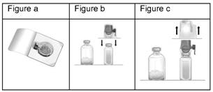
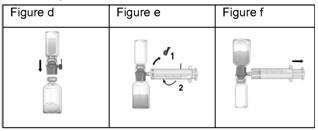
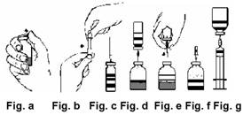

RÉSUMÉ DES CARACTÉRISTIQUES DU PRODUIT
ANSM - Mis à jour le : 09/09/2011
FEIBA 1000 U/20 ml, poudre et solvant pour solution injectable
2. COMPOSITION QUALITATIVE ET QUANTITATIVE
Facteurs de coagulation ayant une activité court-circuitant l'inhibiteur du Facteur VIII ............................. 1000 U*
Contenus dans une quantité de protéines totales** de ......................................................................... 800 mg
Pour 20 ml.
* Une unité FEIBA est définie comme la quantité de substance active qui permet de raccourcir le temps de céphaline activé (TCA) d'un plasma de référence à haut titre d'inhibiteur de Facteur VIII, de 50 % par rapport à la valeur du contrôle - c'est à dire que si le TCA du plasma inhibiteur est de 100 secondes, l'unité est la quantité de produit actif qui amène le TCA à 50 secondes - lorsque des volumes équivalents d'une solution de FEIBA et du plasma inhibiteur sont utilisés.
** comprenant notamment les facteurs de coagulation II, IX et X, principalement sous forme non activée, du Facteur VII principalement sous forme activée, du Facteur VIII (FVIIIC: Ag) à une concentration inférieure à 0,1 U par unité FEIBA. Les facteurs du système kallicréine-kinine ne sont pas décelables ou n'existent qu'à l'état de traces.
Pour la liste complète des excipients, voir rubrique 6.1.
Poudre et solvant pour solution injectable.
4.1. Indications thérapeutiques
Ce médicament est indiqué:
· dans le traitement et la prévention des hémorragies et en situation chirurgicale dans le déficit constitutionnel en facteur VIII (hémophilie A), chez les patients "forts répondeurs" ayant développé un inhibiteur dirigé contre le facteur VIII;
· en cas d'échec par le Facteur VIIa, dans le traitement et la prévention des hémorragies et en situation chirurgicale dans le déficit constitutionnel en facteur IX (hémophilie B), chez les patients "forts répondeurs" ayant développé un inhibiteur dirigé contre le facteur IX;
· dans le traitement des hémorragies et en situation chirurgicale chez les patients avec hémophilie acquise par auto-anticorps anti-facteur VIII.
4.2. Posologie et mode d'administration
Posologie
La posologie est indépendante du titre de l'anticorps du patient.
Quels que soient le type et la sévérité de l'hémorragie, la posologie recommandée sera dans tous les cas de 80 U/kg 2 à 3 fois/jour sans dépasser 240 U/kg par 24 heures et 100 U/kg et par injection.
Dans le cas des hémorragies graves:
· le traitement nécessite la surveillance clinique et biologique attentive du patient avec en particulier, pour les hémorragies non extériorisées, le contrôle régulier de la NFS;
Dans le cas d'interventions chirurgicales:
· l'administration sera faite immédiatement avant l'intervention puis toutes les 8 heures jusqu'à la cicatrisation.
L'expérience avec FEIBA chez les patients présentant une hémophilie acquise par auto-anticorps anti-facteur VIII est limitée aux interventions chirurgicales mineures.
Surveillance du traitement:
Le plus souvent, les résultats des tests de coagulation ne sont pas corrélés avec les résultats cliniques, et par conséquent, ne peuvent être utilisés que de façon limitée pour la surveillance du traitement.
Toutefois, le raccourcissement du temps de Quick est un indicateur de l'effet biologique sur la coagulation. Pour un temps de Quick basal normal, celui obtenu après injection ne doit pas être inférieur à 8 secondes.
Mode d'administration
Le produit doit être administré par voie intraveineuse après reconstitution avec le diluant fourni (selon les modalités décrites dans la rubrique 6.6).
FEIBA doit être exclusivement injecté par voie intraveineuse lente sans dépasser un débit de 2 U/kg/min.
La solution reconstituée est claire ou légèrement opalescente. Ne pas utiliser de solutions présentant un aspect non homogène ou contenant un dépôt.
Des données recueillies chez 67 hémophiles congénitaux, dont 65 hémophiles A et 2 hémophiles B, pour 1143 épisodes hémorragiques ou évènements traités par FEIBA lors de 1079 séquences thérapeutiques, dont 720 (67 %) effectués à domicile, ont montré la possibilité d'utiliser FEIBA à domicile avec une efficacité et une tolérance comparables aux traitements effectués en milieu hospitalier. Le traitement à domicile permet de traiter précocement les épisodes hémorragiques et augmente donc les chances d'une résolution plus rapide et de séquelles moins importantes.
La possibilité d'utiliser FEIBA à domicile peut être envisagée pour le traitement d'hémorragies mineures à modérées (hémarthroses, hématomes ou saignements cutanéo-muqueux) ou les traitements préventifs, en accord avec le Centre de Traitement Régional de l'Hémophilie qui assure le suivi du patient et dans les conditions suivantes:
· Une formation à l'auto-traitement doit avoir été dispensée au patient par l'équipe soignante d'un Centre de Traitement Régional des Hémophiles;
· Le patient doit avoir été jugé apte par cette équipe à se traiter ou à se faire traiter à domicile;
· Le traitement à domicile doit être réalisé en étroite collaboration avec le Centre Spécialisé au sein duquel le patient est suivi;
· Au-delà de la 4e injection ou de 3 jours de traitement, le patient doit contacter le Centre Spécialisé qui le suit;
· Toutes les injections de FEIBA doivent être notées sur le carnet de l'hémophile et rapportées au médecin spécialisé dans le traitement de l'hémophilie.
· hypersensibilité à l'un des constituants de la préparation;
· signes biologiques et/ou cliniques de coagulation intravasculaire disséminée (CIVD);
· signes biologiques, histologiques et/ou cliniques spécifiques d'une insuffisance hépatique (qui majorerait le risque de coagulation intra-vasculaire disséminée (CIVD) en raison de la clairance diminuée des facteurs activés);
· risque potentiel de complications thrombotiques, notamment cardio-vasculaires.
4.4. Mises en garde spéciales et précautions d'emploi
· Le traitement substitutif de l'hémophilie avec inhibiteur doit être pris en charge et/ou surveillé par un médecin ayant l'expérience du traitement de l'hémophilie.
· Ne pas dépasser la dose de 100 U de FEIBA par kg et par injection.
· Dans le cas de traitements d'hémorragies mineures à modérées (hémarthroses, hématomes ou hémorragies cutanéo-muqueuses) ou de traitements prophylactiques administrés à domicile en accord avec le Centre de Traitement Régional de l'Hémophilie qui assure le suivi du patient, les conditions suivantes doivent être appliquées:
o Une formation à l'auto-traitement doit avoir été dispensée au patient par l'équipe soignante d'un Centre de Traitement Régional des Hémophiles;
o Le patient doit avoir été jugé apte par cette équipe à se traiter ou à se faire traiter à domicile;
o Le traitement à domicile doit être réalisé en étroite collaboration avec le Centre Spécialisé au sein duquel le patient est suivi;
o Au-delà de la 4e injection ou de 3 jours de traitement, le patient doit contacter le Centre Spécialisé qui le suit;
o Toutes les injections de FEIBA doivent être notées sur le carnet de l'hémophile et rapportées au médecin spécialisé dans le traitement de l'hémophile.
· Le risque de survenue d'effets indésirables à type de CIVD ou de thrombose augmente pour des doses journalières supérieures à 240 U ou pour des doses de 100 U de FEIBA par kg de poids corporel et par injection et notamment répétées pendant plusieurs jours: les signes cliniques et biologiques d'une CIVD et les symptômes d'une ischémie coronarienne aiguë devront être attentivement recherchés immédiatement et à quelques jours du début du traitement.
· En cas de modification de la pression artérielle, de pouls irrégulier, de dyspnée, de douleurs thoraciques ou de toux, interrompre immédiatement l'injection de FEIBA. Les réactions allergiques sévères de type anaphylactique imposent l'arrêt immédiat du traitement. En cas de choc, le traitement symptomatique de l'état de choc devra être instauré.
· Le contrôle in-vitro de l'efficacité de FEIBA donne un temps de Quick raccourci, toutefois, pour un temps de Quick basal normal, celui obtenu après injection de FEIBA ne doit pas être inférieur à 8 secondes.
· Une thrombopénie peut être responsable d'une inefficacité du traitement par FEIBA. Un contrôle de la numération des plaquettes est souhaité avant et en cours de traitement.
· Etant donné le risque de relance anamnéstique de l'inhibiteur anti-facteur VIII (dans 10 à 30 % des cas) ou anti-facteur IX, le titre de l'inhibiteur doit être régulièrement surveillé.
· Le risque d'accidents thrombo-emboliques nécessite une surveillance biologique stricte à la recherche des premiers signes d'une éventuelle CIVD et la prévention des complications thrombo-emboliques selon les recommandations en usage devra être instaurée, en particulier chez les patients avec antécédents cardiovasculaires.
Dans chacune de ces situations, le bénéfice du traitement par FEIBA doit être évalué par rapport au risque de complications.
FEIBA 1000 U/20 ml, poudre et solvant pour solution injectable contient 81,75 mg de sodium par flacon de 20 ml. En tenir compte en cas de régime hyposodé.
Les mesures habituelles de prévention du risque de transmission d'agents infectieux par les médicaments préparés à partir de sang ou de plasma humain comprennent la sélection clinique des donneurs, la recherche des marqueurs spécifiques d'infection sur chaque don et sur les mélanges de plasma ainsi que la mise en œuvre dans le procédé de fabrication d'étapes efficaces pour l'inactivation/élimination virale. Cependant, lorsque des médicaments préparés à partir de sang ou de plasma humain sont administrés, le risque de transmission d'agents infectieux ne peut pas être totalement exclu. Ceci s'applique également aux virus inconnus ou émergents ou autres types d'agents infectieux.
Les mesures prises sont considérées comme efficaces vis-à-vis des virus enveloppés tels que le VIH, le VHB et le VHC, et vis-à-vis du virus non enveloppé VHA.
Les mesures prises peuvent être d'efficacité limitée vis-à-vis des virus non enveloppés tel que le parvovirus B19. L'infection par le parvovirus B19 peut être sévère chez le fœtus et chez les personnes atteintes de certains types d'anémies ou d'un déficit immunitaire.
Une vaccination appropriée (hépatites A et B) des patients recevant des facteurs de coagulation est recommandée.
4.5. Interactions avec d'autres médicaments et autres formes d'interactions
L'utilisation simultanée de FEIBA et d'antifibrinolytiques tel que l'acide epsilon-aminocaproïque doit être faite avec précaution et attentivement surveillée.
Aucune étude expérimentale n'a été conduite chez l'animal lors de la grossesse et de l'allaitement.
De plus, il existe un risque thrombotique élevé durant la grossesse. En conséquence, FEIBA ne doit être administré au cours de la grossesse et de l'allaitement qu'en cas de nécessité absolue.
4.7. Effets sur l'aptitude à conduire des véhicules et à utiliser des machines
Rien ne suggère que FEIBA diminue l'aptitude à conduire des véhicules ou à utiliser des machines.
Réactions d'hypersensibilité de type allergique telles que fièvre, poussée d'urticaire, malaise, nausées, ainsi que d'autres réactions anaphylactiques de gravité variable ont été rapportées chez les patients traités par FEIBA.
En cas de choc, le traitement symptomatique de l'état de choc devra être instauré.
La relance anamnéstique des anticorps anti-facteur VIII et anti-facteur IX, du fait de la présence de ces facteurs dans FEIBA, peut être observée.
Des accidents thrombo-emboliques peuvent être observés en cas d'injection de produits contenant des facteurs du complexe prothrombique, notamment en cas de posologies élevées et/ou chez des patients à risque thrombotique.
Il a été observé immédiatement ou à distance des signes biologiques et/ou cliniques de CIVD après injections de fortes doses de FEIBA (doses quotidiennes supérieures à 240 unités par kg), notamment répétées pendant plusieurs jours, (voir rubrique 4.4).
De rares cas d'infarctus du myocarde ont été observés lors de traitement par FEIBA après administration de fortes doses et/ou après administration prolongée et/ou chez des patients ayant des facteurs de risque prédisposants.
Après un surdosage de FEIBA, il existe un risque élevé d'accidents thrombo-emboliques, de CIVD ou d'infarctus du myocarde. Si des signes en faveur de tels accidents apparaissent, il est nécessaire de suspendre l'administration de FEIBA. Si après l'arrêt d'administration du produit, l'état clinique ne se normalise pas rapidement, les mesures thérapeutiques spécifiques devront être prises, en tenant compte du trouble de la coagulation sous-jacent.
5. PROPRIETES PHARMACOLOGIQUES
5.1. Propriétés pharmacodynamiques
SANG ET ORGANES HEMATOPOIETIQUES
(SUBSTITUT DE COAGULATION COURT-CIRCUITANT LE FACTEUR VIII, B02BD03)
L'activité de FEIBA est due à la formation d'une «activité coagulante court-circuitant l'action des facteurs anti-hémophiliques VIII et IX», induisant la coagulation à un moment où les facteurs VIII et IX ne sont plus nécessaires. Cette activité est fondée sur la présence des facteurs IX, X et VII activé qui se lient aux plaquettes pour former «une prothrombinase» à l'abri de l'antithrombine.
5.2. Propriétés pharmacocinétiques
La présence de plusieurs facteurs de coagulation dans FEIBA rend impossible l'étude cinétique du produit.
5.3. Données de sécurité préclinique
Aucune étude sur la toxicité par administration réitérée n'a été réalisée (en raison du développement des anticorps chez les animaux).
Aucune potentialité mutagène n'a été révélée sur cellules procaryotes (test d'Ames).
Poudre: chlorure de sodium et citrate de sodium.
Solvant de reconstitution: eau pour préparations injectables.
FEIBA ne doit en aucun cas être mélangé avec d'autre produit et/ou médicament.
Seuls les dispositifs d'injection/perfusion en plastique homologués peuvent être utilisés car l'adsorption des facteurs de coagulation dérivés du plasma humain sur les surfaces internes de certains matériels de perfusion peut être responsable de l'échec du traitement.
2 ans.
Après reconstitution: une utilisation immédiate est recommandée. Toutefois, la stabilité a été démontrée pendant 3 heures à 25°C.
6.4. Précautions particulières de conservation
A conserver à une température ne dépassant pas 25°C.
Ne pas congeler.
6.5. Nature et contenu de l'emballage extérieur
1000 U de poudre en flacon (verre) + 20 ml de solvant en flacon (verre) munis de bouchons (chlorobutyle) avec une aiguille de perfusion, un dispositif de transfert BAXJECT II Hi-Flow, une seringue à usage unique (polypropylène), un nécessaire d'injection comprenant une tubulure avec une aiguille à ailette - boîte de 1.
1000 U de poudre en flacon (verre) + 20 ml de solvant en flacon (verre) munis de bouchons (chlorobutyle) avec une aiguille de transfert, une aiguille-filtre, une aiguille d'aération, une aiguille de perfusion et une seringue à usage unique (polypropylène), un nécessaire d'injection comprenant une tubulure avec une aiguille à ailette -boîte de 1.
6.6. Précautions particulières d’élimination et de manipulation
Ne jamais utiliser les flacons dès la sortie du réfrigérateur et respecter les règles d'asepsie habituelles.
Ne pas utiliser le dispositif de transfert sans aiguille ou l'aiguille de transfert si l'emballage stérile ou le conditionnement est abîmé ou montre des signes de détérioration.
Administration:
Utiliser une technique aseptique.
Il est recommandé de commencer l'administration dans les 3 heures suivant la reconstitution. Le matériel reconstitué ne doit pas être réfrigéré.
La solution est claire ou légèrement opalescente.
Ne pas utiliser de solution trouble ou contenant un dépôt.
|
|
Présentation avec BAXJECT II Hi-Flow |
|
Présentation avec aiguilles |
|
|
1. |
Amener le flacon de solvant (eau pour préparations injectables) à température ambiante (15°C - 25°C). |
1. |
Amener le flacon de solvant (eau pour préparations injectables) à température ambiante (15°C - 25°C). |
|
|
2. |
Enlever les capsules des flacons de poudre et de solvant et nettoyer les bouchons. Placer les flacons sur une surface plane. |
2. |
Enlever les capsules des flacons de poudre et de solvant (fig. a) et nettoyer les bouchons avec une solution antiseptique. |
|
|
3. |
Ouvrir l'emballage de BAXJECT II Hi-Flow en retirant l'opercule sans toucher l'intérieur (Fig. a). Ne pas retirer le dispositif de l'emballage. |
3. |
Enlever l'embout protecteur couvrant l'une des extrémités de la double aiguille (fig. b) et l'enfoncer dans le bouchon du solvant (fig. c). |
|
|
4. |
Retourner l'emballage vers le bas et insérer la pointe en plastique transparent dans le bouchon du flacon de solvant (fig.b). Saisir l'emballage par les rebords puis retirer l'emballage de BAXJECT II Hi-Flow (Fig. c). |
4. |
Enlever l'embout protecteur couvrant l'autre extrémité de la double aiguille. |
|
|
Ne pas retirer le bouchon bleu de Baxject II Hi-Flow. |
5. |
Retourner le flacon de solvant au-dessus du flacon de FEIBA puis enfoncer rapidement l'aiguille dans le centre du bouchon du flacon de FEIBA (fig. d). Le vide contenu dans le flacon de poudre permet d'aspirer le solvant. |
|
|
|
5. |
Retourner le flacon de solvant connecté à BAXJECT II Hi-Flow sur lui-même, de sorte que le flacon de solvant se trouve en haut. Insérer la pointe en plastique violet dans le bouchon du flacon de FEIBA. Le vide va aspirer le solvant dans le flacon de FEIBA (Fig. d). |
6. |
Déconnecter les deux flacons en enlevant l'aiguille du bouchon du flacon du solvant puis du flacon de FEIBA (fig. e). Agiter doucement jusqu'à dissolution complète (moins de 10 minutes). |
|
|
6. |
Agiter doucement jusqu'à dissolution complète. S'assurer que FEIBA est entièrement dissous, afin d'éviter que la substance active soit retenue par l'aiguille-filtre. |
7. |
S'assurer que FEIBA est entièrement dissous, afin d'éviter que la substance active soit retenue par l'aiguille-filtre. Puis insérer l'aiguille d'aération fournie (fig.f) afin d'éliminer la mousse éventuelle. Retirer l'aiguille d'aération. |
|
|
 |
|
Le mélange préalable avec d'autres produits et (ou) médicaments est formellement déconseillé. |
|
|
|
Instruction pour injection / perfusion: |
Instruction pour injection / perfusion: |
|||
|
1. |
Retirer le bouchon bleu de Baxject II Hi-Flow. Prenez la seringue et connectez-la à Baxject II Hi-Flow (NE PAS ASPIRER D'AIR DANS LA SERINGUE) (fig.e). |
1. |
Adapter l'aiguille-filtre sur la seringue à usage unique et tirer le piston pour faire rentrer l'air dans la seringue. (fig. g) |
|
|
2. |
Retourner le système (flacon de FEIBA désormais en haut). Remplir la seringue de solution reconstituée de FEIBA en tirant doucement le piston en arrière (fig.f). |
2. |
Insérer l'aiguille-filtre dans le flacon de FEIBA reconstitué. |
|
|
3. |
Retirer la seringue |
3. |
Injecter de l'air dans le flacon puis aspirer le matériel reconstitué dans la seringue. |
|
|
4. |
Injecter lentement par voie intraveineuse à l'aide du nécessaire d'injection (ou aiguille à usage unique). |
4. |
Enlever et jeter l'aiguille-filtre. Fixer l'aiguille à usage unique ou le nécessaire d'injection à la seringue. |
|
|
 |
 |
|
||
Ne pas dépasser la vitesse d'injection de 2 unités FEIBA/kg/minute.
Si des dispositifs autres que ceux fournis devaient être utilisés, s'assurer de l'utilisation d'un filtre ayant des pores d'au moins 149 µm.
7. TITULAIRE DE L’AUTORISATION DE MISE SUR LE MARCHE
BAXTER SAS
AVENUE LOUIS PASTEUR
78310 MAUREPAS
8. NUMERO(S) D’AUTORISATION DE MISE SUR LE MARCHE
· 564 515-0 ou 34009 564 515 0 0: 1000 U de poudre en flacon (verre) + 20 ml de solvant en flacon (verre) munis de bouchons (chlorobutyle) avec une aiguille de perfusion, un dispositif de transfert BAXJECT II Hi-Flow, une seringue à usage unique (polypropylène), un nécessaire d'injection comprenant une tubulure avec une aiguille à ailette - boîte de 1.
· 562 077-6 ou 34009 562 077 6 3: 1000 U de poudre en flacon (verre) + 20 ml de solvant en flacon (verre) munis de bouchons (chlorobutyle) avec une aiguille de transfert, une aiguille-filtre, une aiguille d'aération, une aiguille de perfusion et une seringue à usage unique (polypropylène), un nécessaire d'injection comprenant un tubulure avec une aiguille à ailette - boîte de 1.
9. DATE DE PREMIERE AUTORISATION/DE RENOUVELLEMENT DE L’AUTORISATION
[à compléter par le titulaire]
10. DATE DE MISE A JOUR DU TEXTE
[à compléter par le titulaire]
Sans objet.
12. INSTRUCTIONS POUR LA PREPARATION DES RADIOPHARMACEUTIQUES
Sans objet.
Liste I.
Médicament soumis à prescription hospitalière.